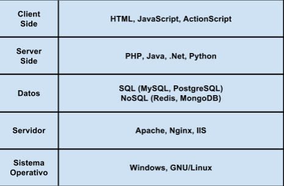

Seguridad Web
Clase: 1
Instituto Educación IT
Autor: Maximiliano Cañellas
Sobre mi
Actualmente
- Consultor en seguridad y desarrollador [at] sinaptica.io
Contactame:
- Email: maxi.canellas@gmail.com
- Twitter: @maxidev_
Sobre el curso
Módulo 1/4: Introducción a tecnologías Web
Temas:
· Intro a software web · Peticiones y respuestas HTTP · Detección de tecnologías usadas · Aprendiendo a usar un Proxy local · Owasp Top 10
Entendiendo el stack
Es importante diferenciar client side de server side
Nos tomamos un momento para entender estos conceptos
Protocolo HTTP:
un esquema simple

Software recomendado: POSTman
Detectando tecnologías web
Herramientas:
- POSTman (otra vez)
- Wappalyzer
- WebProxy (ZAP/Burp)